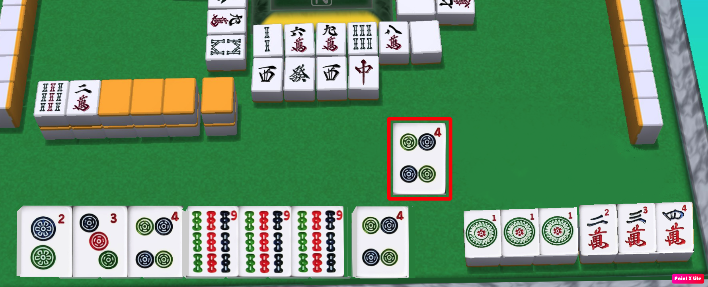

In this example the player just drew the 4 of circles they now have 4 groups of 3 and a pair. Can they win with this hand?

No because they're hand is open and they didnt complete a winning method
For open hands - The easiest & most common winning method is called "Tanyao", which is to have no 1's and 9's. Since there is both a 1 and a 9 in this example then they need to choose another winning method.
The next easiest winning method is "Yakuhai" - Which is to have atleast one dragon or wind combination. This player doesnt have any dragons or directions, and is so unlucky that they were'nt able to complete any of the other winning methods. There are many, so move onto the next questions for more examples.